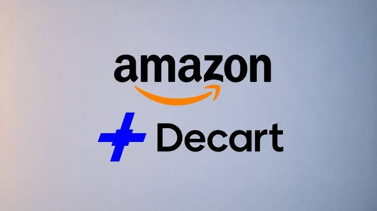

新闻 · 2026-11-24 12:00
亚马逊收购 Decart 的 AI 优化技术，强化自研芯片竞争力
据IT之家报道，亚马逊宣布收购Decart公司的AI优化技术，并邀请Decart联合创始人、员工加入。彭博社援引知情人士称，交易金额约为75亿美元，但亚马逊未披露金额或财务条款。Decart成立于2023年，其DOS软件引擎可提升AI系统运行速度，并支持在英伟达、谷歌和亚马逊等厂商的芯片间切换。亚马逊称，Decart自2025年起合作帮助Trainium芯片取得出色性能，此次技术将优化AI推理性能和自研芯片，使客户以更快速度、更低成本训练和运行模型。

来源与核验
单一信源报道，未交叉核实